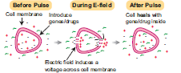
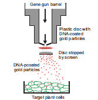
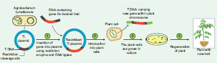
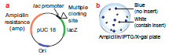
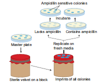
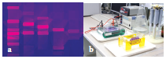
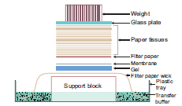
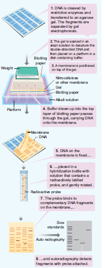

Figure 4.12: Electroporation Methods of Gene Transfer
Liposomes the artificial phospholipid vesicles are useful in gene transfer. The gene or DNA is transferred from liposome into vacuole of plant cells. It is carried out by encapsulated DNA into the vacuole. This technique is advantageous because the liposome protects the introduced DNA from being damaged by the acidic pH and protease enzymes present in the vacuole. Liposome and tonoplast of vacuole fusion resulted in gene transfer. This process is called lipofection.

Figure 4.13: Gene gun method of Gene Transfer
The foreign DNA is coated onto the surface of minute gold or tungsten particles OPEN BRACKET 1-3 μm CLOSE BRACKET and bombarded onto the target tissue or cells using a particle gun OPEN BRACKET also called as gene gunSLASHmicro projectile gunSLASHshotgun CLOSE BRACKET. Then the bombarded cells or tissues are cultured on selected medium
to regenerate plants from the transformed cells.OPEN BRACKET Figure 4.16 CLOSE BRACKET
Gene transfer is mediated with the help of a plasmid vector is known as indirect or vector mediated gene transfer. Among the various vectors used for plant transformation, the Ti-plasmid from Agrobacterium tumefaciens has been used extensively. This bacterium has a large size plasmid, known as Ti plasmid OPEN BRACKET Tumor inducing CLOSE BRACKET and a portion of it referred as T-DNA OPEN BRACKET transfer DNA CLOSE BRACKET is transferred to plant genome in the infected cells and cause plant tumors OPEN BRACKET crown gall CLOSE BRACKET. Since this bacterium has the natural ability to transfer T-DNA region of its plasmid into plant genome, upon infection of cells at the wound site, it is also known as the natural genetic engineer of plants.The foreign gene OPEN BRACKET Example, Bt gene for insect resistance CLOSE BRACKET and plant selection marker gene, usually an antibiotic gene like npt II which confers resistance to antibiotic kanamycin are cloned in the T DNA region of Ti-plasmid in place of unwanted DNA sequences.OPEN BRACKET Figure 4.14 CLOSE BRACKET

Figure 4.14: Agrobacterium mediated gene transfer in plants
After the introduction of r-DNA into a suitable host cell, it is essential to identify those cells which have received the r-DNA molecule. This process is called screening. The vector or foreign DNA present in recombinant cells expresses the characters, while the non-recombinants do not express the characters or traits. For this some of the methods are used and one such method is Blue-White Colony Selection method.
It is a powerful method used for screening of recombinant plasmid. In this method, a reporter gene lac Z is inserted in the vector. The lacZ encodes the enzyme Beta-galactosidase and contains several recognition sites for restriction enzyme.
Beta-galactosidase breaks a synthetic substrate called X-gal OPEN BRACKET 5-bromo-4-chloro-indolyl- Beta - D-galacto-pyranoside CLOSE BRACKET into an insoluble blue coloured product. If a foreign gene is inserted into lacZ, this gene will be inactivated. Therefore, no-blue colour will develop OPEN BRACKET white CLOSE BRACKET because Beta-galactosidase is not synthesized due to inactivation of lacZ. Therefore, the host cell containing r-DNA form white coloured colonies on the medium contain X-gal, whereas the other cells containing non-recombinant DNA will develop the blue coloured colonies. On the basis of colony colour, the recombinants can be selected.

Figure 4.15: a. Plasmid vector designed forblue-white screening
b. Blue-white colony selection method
An antibiotic resistance marker is a gene that produces a protein that provides cells with resistance to an antibiotic. Bacteria with transformed DNA can be identified by growing on a medium containing an antibiotic. Recombinants will grow on these media as they contain genes encoding resistance to antibiotics such as ampicillin, chloro amphenicol, tetracycline or kanamycin, etc., while others may not be able to grow in these media, hence it is considered useful selectable marker.
A technique in which the pattern of colonies growing on a culture plate is copied. A sterile filter plate is pressed against the culture plate and then lifted. Then the filter is pressed against a second sterile culture plate. This results in the new plate being infected with cell in the same relative positions as the colonies in the original plate. Usually, the medium used in the second plate will differ from that used in the first. It may include an antibiotic or exclude a growth factor. In this way, transformed cells can be selected.

Figure 4.16: Replica plating technique
Electrophoresis is a separating technique used to separate different biomolecules with positive and negative charges.
By applying electricity OPEN BRACKET DC CLOSE BRACKET the molecules migrate according to the type of charges they have. The electrical charges on different molecules are variable.
Positive charged Cations will move negative towards Cathode
negativecharged Anions will move Positive towards Anode

Figure 4. 17: a. Bands of DNA in Agarose gel b. Gel Electrophoresis Instrument
It is used mainly for the purification of specific DNA fragments. Agarose is convenient for separating DNA fragments ranging in size from a few hundred to about 20000 base pairs. Polyacrylamide is preferred for the purification of smaller DNA fragments. The gel is complex network of polymeric molecules. DNA molecule is negatively charged molecule - under an electric field DNA molecule migrates through the gel. The electrophoresis is frequently performed with marker DNA fragments of known size which allow accurate size determination of an unknown DNAmolecule by interpolation. The advantages of agarose gel electrophoresis are that the DNA bands can be readily detected at high sensitivity. The bands of DNA in the gel are stained with the dye
Ethidium Bromide and DNA can be detected as visible fluorescence illuminated in UV light will give orange fluorescence, which can be photographed.
Agricultural diagnostics refers to a variety of tests that are used for detection of pathogens in plant
tissues. Two of the most efficient methods are
Elisa is a diagnostic tool for identification of pathogen species by using antibodies and diagnostic
agents. Use of ELISA in plant pathology especially for weeding out virus infected plants from large scale planting is well known.
DNA Probes, isotopic and non-isotopic OPEN BRACKET Northern and Southern blotting CLOSE BRACKET are popular tools for
identification of viruses and other pathogens
Blotting techniques are widely used analytical tools for the specific identification of desired DNA or RNA fragments from larger number of molecules. Blotting refers to the process of immobilization of sample nucleic acids or solid support OPEN BRACKET nitrocellulose or nylon membranes. CLOSE BRACKET The blotted nucleic acids are then used as target in the hybridization experiments for their specific detection.
The transfer of DNA from agarose gels to nitrocellulose membrane.
The transfer of RNA to nitrocellulose membrane.
Electrophoretic transfer of Proteins to nitrocellulose membrane.

Figure 4.18: Diagrammatic representation of a typical blotting apparatus
The transfer of denatured DNA from Agarose gel to Nitrocellulose Blotting or Filter Paper technique was introduced by Southern in 1975 and this technique is called Southern Blotting Technique.
Steps
The transfer of DNA from agarose gel to nitrocellulose filter paper is achieved by Capillary Action.
A buffer Sodium Saline Citrate OPEN BRACKET SSC CLOSE BRACKET is used, in which DNA is highly soluble, it can be drawn up through the gel into the Nitrocellulose membrane.
By this process ss-DNA becomes ‘Trapped’ in the membrane matrix.
This DNA is hybridized with a nucleic acid and can be detected by autoradiography.
Autoradiography - A technique that captures the image formed in a photographic emulsion due to emission of light or radioactivity from a labelled component placed together with unexposed film.

Figure 4.19: Steps involved in southern blotting technique